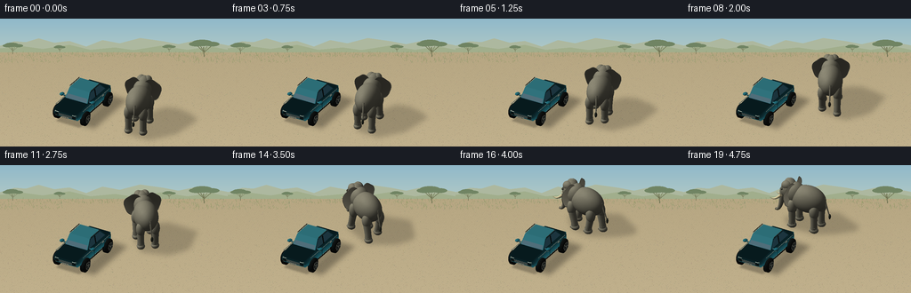
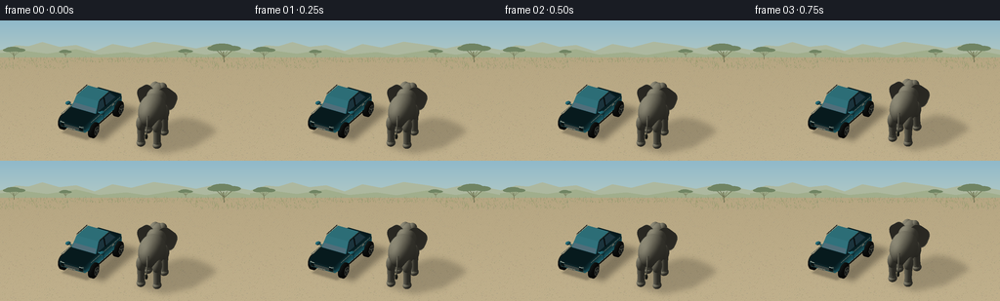
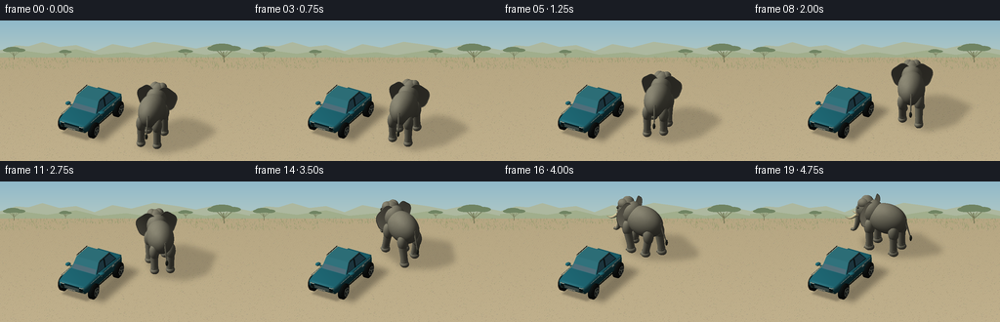
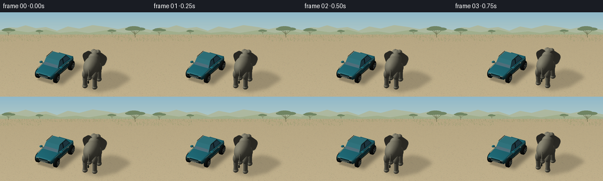

CODING AGENTS AS PIXEL WORLD MODELS
traex/GPT-6.1-Sol · dynamic_spatial_relationship_0064
点击播放 · 原生 RGB 像素
逐轮保存的候选
回放视频、检查图与代码变化。
每份候选均可单独播放。实际图片检查记录在下方工具轨迹中。
候选 01播放与检查图
点击播放 · 原生 RGB 像素


展开代码变化
--- 上一保存版本
+++ 本次保存版本
@@ -0,0 +1,420 @@
+"""A self-contained, supersampled RGB animation using mathematical meshes only."""
+import math
+from pathlib import Path
+import numpy as np
+from PIL import Image, ImageDraw, ImageFilter
+import artifact_io
+
+ROOT=Path(__file__).resolve().parent
+W,H=768,432
+S=W/14.4
+TARGET=np.array([1.1,2.0,1.4])
+RIGHT=np.array([math.sqrt(3)/2,.5,0.])
+UP=np.array([-.25,math.sqrt(3)/4,math.sqrt(3)/2])
+VIEW=np.cross(RIGHT,UP)
+LIGHT=np.array([-0.55,-.40,.77]); LIGHT/=np.linalg.norm(LIGHT)
+CAM=VIEW
+rng=np.random.default_rng(49)
+
+# Mesh builder: colors and smooth vertex normals are independent of topology.
+class Mesh:
+ def __init__(self): self.v=[]; self.n=[]; self.f=[]; self.c=[]; self.m=[]
+ def add(self,v,n,f,color,mat=0):
+ start=len(self.v); v=np.asarray(v,float); n=np.asarray(n,float)
+ self.v.extend(v); self.n.extend(n); self.f.extend(np.asarray(f,int)+start)
+ col=np.asarray(color,float)
+ if col.ndim==1: col=np.tile(col,(len(v),1))
+ self.c.extend(col); self.m.extend([mat]*len(f))
+ def ellipsoid(self,center,radii,color,mat=0,nu=28,nv=18,R=None):
+ a=np.linspace(0,2*np.pi,nu+1); b=np.linspace(-np.pi/2,np.pi/2,nv+1)
+ aa,bb=np.meshgrid(a,b)
+ unit=np.stack([np.cos(bb)*np.cos(aa),np.cos(bb)*np.sin(aa),np.sin(bb)],-1).reshape(-1,3)
+ v=unit*np.array(radii); n=unit/np.array(radii); n/=np.maximum(np.linalg.norm(n,axis=1,keepdims=True),1e-8)
+ if R is not None: v=v@R.T; n=n@R.T
+ v+=center
+ f=[]
+ for j in range(nv):
+ for i in range(nu):
+ q=j*(nu+1)+i; f.extend([(q,q+1,q+nu+2),(q,q+nu+2,q+nu+1)])
+ col=np.tile(color,(len(v),1)).astype(float)
+ if mat==1:
+ noise=(np.sin(unit[:,0]*47+unit[:,1]*29+unit[:,2]*33)*np.sin(unit[:,2]*71-unit[:,1]*21))
+ col+=noise[:,None]*2.0
+ self.add(v,n,f,col,mat)
+ def quad(self,points,color,mat=0,sub=1):
+ p=np.array(points,float)
+ nn=np.cross(p[1]-p[0],p[3]-p[0]); nn/=max(np.linalg.norm(nn),1e-8)
+ v=[]
+ for j in range(sub+1):
+ for i in range(sub+1):
+ u=i/sub; t=j/sub
+ v.append((1-t)*((1-u)*p[0]+u*p[1])+t*((1-u)*p[3]+u*p[2]))
+ f=[]
+ for j in range(sub):
+ for i in range(sub):
+ q=j*(sub+1)+i; f.extend([(q,q+1,q+sub+2),(q,q+sub+2,q+sub+1)])
+ self.add(v,np.tile(nn,(len(v),1)),f,color,mat)
+ def tube(self,points,radii,color,mat=0,segments=12,wrinkle=0):
+ pts=np.array(points,float); rr=np.asarray(radii,float)
+ if rr.ndim==0: rr=np.full(len(pts),rr)
+ tangent=np.gradient(pts,axis=0); tangent/=np.linalg.norm(tangent,axis=1,keepdims=True)
+ v=[]; n=[]
+ for k,(p,r,t) in enumerate(zip(pts,rr,tangent)):
+ ref=np.array([1.,0,0]) if abs(t[0])<.8 else np.array([0.,1.,0])
+ u=np.cross(t,ref); u/=np.linalg.norm(u); vv=np.cross(t,u)
+ for j in range(segments):
+ a=j*2*np.pi/segments; norm=np.cos(a)*u+np.sin(a)*vv
+ radius=r*(1+wrinkle*np.sin(k*2.3))
+ v.append(p+norm*radius); n.append(norm)
+ f=[]
+ for k in range(len(pts)-1):
+ for j in range(segments):
+ a=k*segments+j; b=k*segments+(j+1)%segments
+ f.extend([(a,b,b+segments),(a,b+segments,a+segments)])
+ self.add(v,n,f,color,mat)
+ # End caps.
+ for k in (0,len(pts)-1):
+ ids=np.arange(k*segments,(k+1)*segments)
+ cv=np.vstack([pts[k],np.array(v)[ids]])
+ nn=np.tile(tangent[k]*(1 if k else -1),(len(cv),1))
+ cf=[(0,j+1,(j+1)%segments+1) for j in range(segments)]
+ self.add(cv,nn,cf,color,mat)
+
+
+def car():
+ m=Mesh(); paint=(32,111,133); dark=(20,29,33); glass=(34,65,77)
+ # Rounded, beveled lower coachwork with a longer hood toward the camera.
+ sections=[(-2.22,.76,.67,.96),(-2.06,.94,.52,1.05),(-1.54,.99,.50,1.14),(-.82,.99,.49,1.18),(1.15,.98,.50,1.16),(1.93,.93,.56,1.08),(2.15,.78,.68,1.02)]
+ verts=[]
+ for y,w,zlo,zhi in sections:
+ verts.extend([[-w*.83,y,zlo],[-w,y,zlo+.14],[-w,y,zhi-.13],[-w*.83,y,zhi], [w*.83,y,zhi],[w,y,zhi-.13],[w,y,zlo+.14],[w*.83,y,zlo]])
+ verts=np.array(verts); faces=[]
+ for k in range(len(sections)-1):
+ for j in range(8):
+ a=k*8+j;b=k*8+(j+1)%8;faces.extend([(a,b,b+8),(a,b+8,a+8)])
+ # Accumulate normals for the softly bevelled body panels.
+ normals=np.zeros_like(verts)
+ for f in faces:
+ a,b,c=verts[list(f)]; norm=np.cross(b-a,c-a)
+ for idx in f:normals[idx]+=norm
+ # Ring order happens to point inward; turn outward.
+ normals=-normals; normals/=np.maximum(np.linalg.norm(normals,axis=1,keepdims=True),1e-8)
+ m.add(verts,normals,faces,paint,2)
+ for k in (0,len(sections)-1):
+ y,w,zlo,zhi=sections[k]
+ points=[[-w,y,zlo],[w,y,zlo],[w,y,zhi],[-w,y,zhi]]
+ if k==0:points=points[::-1]
+ m.quad(points,paint,2)
+ # Dark sill, chrome upper belt and door details.
+ for side in (-1,1):
+ x=side*.995
+ m.quad([[x,-1.83,.52],[x,1.79,.52],[x,1.79,.62],[x,-1.83,.62]],(28,39,41))
+ m.tube([[x,-1.72,1.105],[x,1.63,1.105]],.018,(144,169,170),3,8)
+ for y in (-.28,.99):
+ m.tube([[x,y,.63],[x,y,1.11]],.006,(18,71,84),0,6)
+ for y in (-.46,.80):
+ m.tube([[x*1.007,y-.10,1.015],[x*1.007,y+.13,1.015]],.026,(185,194,185),3,8)
+ # Cabin shell: blue pillars, pale metallic roof, front and back inclined glass.
+ p=[[-.82,-.88,1.13],[.82,-.88,1.13],[.73,-.40,1.78],[-.73,-.40,1.78]]
+ m.quad(p,paint,2)
+ m.quad([[-.755,-.848,1.20],[.755,-.848,1.20],[.671,-.422,1.715],[-.671,-.422,1.715]],glass,4,5)
+ m.quad([[-.73,-.40,1.78],[.73,-.40,1.78],[.72,.88,1.79],[-.72,.88,1.79]],(49,124,143),2,4)
+ m.quad([[-.72,.88,1.79],[.72,.88,1.79],[.84,1.49,1.13],[-.84,1.49,1.13]],paint,2)
+ m.quad([[-.66,.923,1.727],[.66,.923,1.727],[.757,1.419,1.19],[-.757,1.419,1.19]],glass,4,4)
+ for side in (-1,1):
+ m.quad([[side*.82,-.88,1.13],[side*.84,1.49,1.13],[side*.72,.88,1.79],[side*.73,-.40,1.78]],paint,2)
+ # Front and rear side windows with a black B-pillar.
+ m.quad([[side*.826,-.76,1.23],[side*.83,.13,1.23],[side*.737,.13,1.71],[side*.747,-.365,1.71]],glass,4,4)
+ m.quad([[side*.834,.235,1.23],[side*.833,1.34,1.23],[side*.738,.85,1.71],[side*.736,.235,1.71]],glass,4,4)
+ m.tube([[side*.836,.18,1.20],[side*.738,.18,1.74]],.043,(20,31,34),0,8)
+ m.tube([[side*.75,-.33,1.827],[side*.75,.83,1.834]],.025,(53,64,65),3,8)
+ m.tube([[side*.90,-.72,1.25],[side*1.15,-.70,1.27]],.045,paint,2,8)
+ m.ellipsoid([side*1.13,-.69,1.28],[.15,.18,.075],paint,2,20,10)
+ # Wheel wells, tires, machined five-spoke rims.
+ for y in (-1.44,1.39):
+ x=side*.975; z=.47
+ theta=np.linspace(0,2*np.pi,33)
+ pp=np.array([[x-.09,y,z],[x+.13,y,z]])
+ m.tube(pp,[.475,.475],(18,24,25),0,32)
+ out=side*1.109
+ # Rounded rubber tire shoulder and rim inset, axle along x.
+ R=np.array([[0,0,1],[1,0,0],[0,1,0]])
+ m.ellipsoid([out,y,z],[.421,.421,.115],(24,28,28),0,32,14,R)
+ m.tube([[side*1.211,y,z],[side*1.216,y,z]],[.282,.282],(148,156,151),3,28)
+ m.tube([[side*1.219,y,z],[side*1.222,y,z]],[.225,.225],(37,47,50),0,24)
+ for a in np.linspace(0,2*np.pi,5,endpoint=False):
+ u=np.array([0,np.cos(a),np.sin(a)]); vv=np.array([0,-np.sin(a),np.cos(a)])
+ p=np.array([side*1.229,y,z])
+ m.quad([p+u*.08-vv*.038,p+u*.254-vv*.028,p+u*.254+vv*.028,p+u*.08+vv*.038],(186,196,191),3)
+ m.ellipsoid([side*1.234,y,z],[.014,.08,.08],(166,178,175),3,16,8)
+ # Recognizable front fascia, grille, two headlights, fog lamps, plate.
+ m.quad([[-.73,-2.226,.68],[.73,-2.226,.68],[.73,-2.226,.85],[-.73,-2.226,.85]],(22,34,36))
+ for z in (.70,.745,.79,.835):m.tube([[-.49,-2.235,z],[.49,-2.235,z]],.012,(124,145,149),3,6)
+ for side in (-1,1):
+ x=side*.61
+ m.quad([[x-.18,-2.20,.84],[x+.18,-2.20,.84],[x+.15,-2.19,.964],[x-.16,-2.19,.964]],(217,231,218),3,2)
+ m.tube([[x-.13,-2.211,.92],[x+.12,-2.211,.92]],.019,(244,247,221),5,8)
+ m.ellipsoid([side*.69,-2.16,.65],[.08,.04,.045],(220,222,198),3,16,8)
+ m.quad([[side*.52,2.159,.80],[side*.78,2.159,.80],[side*.78,2.159,1.00],[side*.52,2.159,1.00]],(167,36,27),3)
+ m.quad([[-.23,-2.245,.588],[.23,-2.245,.588],[.23,-2.245,.694],[-.23,-2.245,.694]],(209,214,199))
+ for x in np.linspace(-.16,.16,7):m.tube([[x,-2.248,.612],[x,-2.248,.663]],.008,(51,59,57),0,4)
+ return m
+
+CAR=car()
+
+def elephant(cx,cy,angle,phase,walking):
+ m=Mesh(); skin=(133,133,122); fold=(111,113,106)
+ # Local +Y is the direction of travel; ears spread across local X.
+ dy=math.cos(angle); dx=math.sin(angle)
+ R=np.array([[dy,dx,0],[-dx,dy,0],[0,0,1.]])
+ origin=np.array([cx,cy,0.])
+ bob=.024*math.sin(phase*2)*walking
+ def ell(p,r,col=skin,nu=28,nv=18):m.ellipsoid(p,r,col,1,nu,nv)
+ ell([0,-.12,2.05+bob],[.78,1.23,.90],nu=38,nv=24)
+ ell([0,.80,2.27+bob],[.60,.65,.72],nu=32,nv=22)
+ # A double-domed forehead and cheek give the head a strong elephant silhouette.
+ ell([0,1.21,2.42+bob],[.53,.59,.66],nu=32,nv=22)
+ ell([-.21,1.31,2.77+bob],[.29,.37,.30],nu=20,nv=14)
+ ell([.21,1.31,2.77+bob],[.29,.37,.30],nu=20,nv=14)
+ # Legs: a slow four-beat walk, planted weight-bearing feet, raised swing feet.
+ for side in (-1,1):
+ for front in (-1,1):
+ offset=(0 if side==1 else math.pi)+(0 if front==1 else math.pi*.75)
+ ph=phase+offset
+ stride=.29*math.sin(ph)*walking
+ lift=max(0,math.cos(ph))*.16*walking
+ y=front*.79; x=side*.48
+ ell([x,y,1.49+bob],[.29,.33,.50],nu=20,nv=14)
+ pts=[[x,y,1.60+bob],[x,y+stride*.22,1.10],[x,y+stride*.75,.57+lift*.4],[x,y+stride,.23+lift]]
+ m.tube(pts,[.258,.235,.211,.23],skin,1,16)
+ ell([x,y+stride,.19+lift],[.26,.30,.20],nu=24,nv=12)
+ for toe in (-1,0,1):
+ ell([x+toe*.125,y+stride+.26,.155+lift],[.054,.035,.061],(164,160,142),nu=10,nv=8)
+ # Fine ankle folds, very subtle to preserve the soft skin.
+ for z in (.36,.43):
+ ring=[]
+ for a in np.linspace(0,2*np.pi,19):ring.append([x+.216*np.cos(a),y+stride*.88+.229*np.sin(a),z+lift])
+ m.tube(ring,.0065,(116,119,109),1,5)
+ # Broad fan-shaped ears, softly cupped and scalloped, with skin folds.
+ for side in (-1,1):
+ flap=.10*math.sin(phase*.65+side)*walking
+ v=[]; n=[]; f=[]; nu=36; nr=8
+ v.append([side*.46,1.10,2.35+bob]);n.append([side*.18,1,.05])
+ for k in range(1,nr+1):
+ r=k/nr
+ for j in range(nu):
+ a=2*np.pi*j/nu
+ edge=1+.045*math.sin(a*5)+.035*math.cos(a*3)
+ x=side*(.54+.62*r*np.cos(a)*edge)
+ z=2.31+.78*r*np.sin(a)*edge+bob
+ y=1.02-.15*r*r+.16*r*np.cos(a)+flap*r*np.cos(a)
+ v.append([x,y,z]); nn=np.array([side*.18*r*np.cos(a),1.,-.15*r*np.sin(a)]);nn/=np.linalg.norm(nn);n.append(nn)
+ for j in range(nu):f.append((0,1+j,1+(j+1)%nu))
+ for k in range(nr-1):
+ for j in range(nu):
+ a=1+k*nu+j;b=1+k*nu+(j+1)%nu
+ f.extend([(a,b,b+nu),(a,b+nu,a+nu)])
+ colors=np.tile((127,126,116),(len(v),1)).astype(float)
+ for k in range(1,nr+1):colors[1+(k-1)*nu:1+k*nu]+=5*(k/nr)
+ m.add(v,n,f,colors,1)
+ rim=np.array(v)[1+(nr-1)*nu:];m.tube(np.vstack([rim,rim[0]]),.016,(117,118,108),1,6)
+ for a in (-1.35,-.65,.1,.9,1.9):
+ pp=[]
+ for r in np.linspace(.24,.87,8):
+ x=side*(.54+.62*r*np.cos(a));z=2.31+.78*r*np.sin(a)+bob;y=1.03-.15*r*r+.16*r*np.cos(a)+flap*r*np.cos(a)
+ pp.append([x,y+.012,z])
+ m.tube(pp,.008,(111,114,104),1,5)
+ # Eyes and raised, wrinkled brows on both sides.
+ for side in (-1,1):
+ ell([side*.449,1.556,2.55+bob],[.091,.08,.064],(91,95,87),nu=16,nv=10)
+ m.ellipsoid([side*.486,1.598,2.55+bob],[.036,.025,.029],(19,24,22),0,16,10)
+ m.ellipsoid([side*.50,1.612,2.563+bob],[.010,.008,.009],(209,205,177),5,10,6)
+ m.tube([[side*.40,1.58,2.62+bob],[side*.48,1.55,2.63+bob],[side*.53,1.49,2.60+bob]],.035,skin,1,8)
+ # Flexible ribbed trunk: hanging down with a gently curled, moving tip.
+ t=np.linspace(0,1,41); sw=.11*math.sin(phase+.6)*walking
+ pts=[]
+ for u in t:
+ y=1.66+.33*u+.27*u**5
+ z=2.28-1.93*u+.37*u**7+bob
+ x=sw*math.sin(u*math.pi*.8)
+ pts.append([x,y,z])
+ rr=.247*(1-t)+.073*t
+ m.tube(pts,rr,skin,1,16,.023)
+ # Tapered ivory tusks, curving forward and slightly upward at their ends.
+ for side in (-1,1):
+ tt=np.linspace(0,1,15)
+ p=[[side*(.29+.12*u),1.69+.74*u,1.99-.36*math.sin(u*math.pi*.67)+bob] for u in tt]
+ m.tube(p,.095*(1-tt)**.75+.006,(226,217,181),3,12)
+ # Long tail and dark bristled tail tuft.
+ t=np.linspace(0,1,18)
+ tail=[[.06+.10*math.sin(phase*.7)*u*walking,-1.24-.39*u,2.32-1.17*u+bob] for u in t]
+ m.tube(tail,.07*(1-t)+.025*t,skin,1,10)
+ ell(tail[-1],[.085,.072,.19],(57,62,55),nu=14,nv=10)
+ # Transform complete local elephant to its continuously moving world pose.
+ m.v=(np.asarray(m.v)@R.T+origin).tolist();m.n=(np.asarray(m.n)@R.T).tolist()
+ return m
+
+
+def project(p):
+ p=np.asarray(p)-TARGET
+ return np.stack([W/2+S*(p@RIGHT),H/2-S*(p@UP)],-1)
+
+
+def make_background():
+ yy,xx=np.mgrid[0:H,0:W]
+ # Camera rays on the horizontal earth, textured with multiscale dry gravel.
+ sx=(xx-W/2)/S; sy=(H/2-yy)/S
+ p=TARGET+sx[...,None]*RIGHT+sy[...,None]*UP
+ lam=-p[...,2]/VIEW[2]
+ world=p+lam[...,None]*VIEW
+ gx,gy=world[...,0],world[...,1]
+ # Muted blue sky and atmospheric haze.
+ v=yy/H
+ sky=np.zeros((H,W,3));
+ for c,(top,bot) in enumerate(zip((144,185,202),(220,222,192))):sky[...,c]=top+(bot-top)*np.clip(v/.60,0,1)
+ horizon=104
+ image=Image.fromarray(np.uint8(sky));d=ImageDraw.Draw(image)
+ # Warm distant hills, minimal background shapes.
+ d.polygon([(0,105),(0,91),(49,76),(87,79),(130,66),(182,81),(233,75),(290,94),(345,72),(403,83),(472,65),(550,76),(601,86),(670,71),(768,90),(768,160)],fill=(173,184,159))
+ d.polygon([(0,114),(0,100),(70,92),(144,102),(233,88),(304,105),(387,97),(450,106),(544,91),(631,105),(713,94),(768,105),(768,180)],fill=(161,174,140))
+ arr=np.asarray(image).astype(float)
+ ground=yy>=114
+ noise=rng.normal(0,1,(H,W))
+ tex=np.sin(gx*19+gy*24)*np.sin(gx*32-gy*15)*1.6+noise*1.4
+ # The sandy turnout grows slightly warmer toward the foreground.
+ for c,base in enumerate((185,169,133)):
+ g=base+tex+(yy/H-.45)*13
+ arr[...,c]=np.where(ground,g,arr[...,c])
+ image=Image.fromarray(np.uint8(np.clip(arr,0,255)));d=ImageDraw.Draw(image)
+ # Fine sparse ground flecks, not a conspicuous patterned surface.
+ for _ in range(2800):
+ x=int(rng.integers(W));y=int(rng.integers(118,H));size=1 if y<250 else int(rng.integers(1,3))
+ col=(155+int(rng.integers(25)),145+int(rng.integers(20)),115+int(rng.integers(22)))
+ d.line((x,y,x+size,y),fill=col,width=1)
+ # Flat-topped acacia silhouettes along the far edge.
+ def acacia(x,y,scale):
+ tr=(112,116,84);fol=(112,132,99)
+ d.line((x,y,x-1*scale,y-21*scale),fill=tr,width=max(1,int(2*scale)))
+ for dx in (-17,-9,8,19):d.line((x,y-10*scale,x+dx*scale,y-26*scale),fill=tr,width=max(1,int(1.4*scale)))
+ for dx,dy,rx,ry in [(-17,-28,17,5),(-4,-31,23,7),(18,-28,16,5)]:
+ d.ellipse((x+(dx-rx)*scale,y+(dy-ry)*scale,x+(dx+rx)*scale,y+(dy+ry)*scale),fill=fol)
+ for x,y,s in [(43,119,1.0),(688,128,1.5),(570,113,.65),(201,113,.58)]:acacia(x,y,s)
+ # Short grass at the edges leaves an uncluttered acting area.
+ for _ in range(620):
+ x=int(rng.integers(W));y=int(rng.integers(115,150))
+ if 210<x<590 and y>130:continue
+ col=(137+int(rng.integers(15)),146+int(rng.integers(14)),100+int(rng.integers(16)))
+ length=int(rng.integers(2,7));d.line((x,y,x+int(rng.integers(-2,3)),y-length),fill=col,width=1)
+ return np.asarray(image).copy()
+
+BG=make_background()
+
+
+def shadows(img,ele):
+ alpha=Image.new('L',(W,H));d=ImageDraw.Draw(alpha)
+ # Projected area of the car, plus an elephant-shaped soft area shadow.
+ def shadow_poly(points,value):
+ pp=np.array(points,float); pp=pp-pp[:,2,None]*(LIGHT/LIGHT[2]);p=project(pp)
+ d.polygon([tuple(q) for q in p],fill=value)
+ shadow_poly([[-1.02,-2.1,1.0],[1.02,-2.1,1.0],[1.02,2.1,1.0],[-1.02,2.1,1.0]],78)
+ ev=np.asarray(ele.v)
+ # A convex silhouette of the projected elephant is a proper directional shadow.
+ sh=ev-ev[:,2,None]*(LIGHT/LIGHT[2]);q=project(sh)
+ q=q[np.isfinite(q).all(1)]
+ # Monotone-chain convex hull, a low-cost broad penumbra approximation.
+ pts=sorted(set(map(tuple,np.round(q[::3],2))))
+ def cross(a,b,c):return (b[0]-a[0])*(c[1]-a[1])-(b[1]-a[1])*(c[0]-a[0])
+ lo=[]
+ for p in pts:
+ while len(lo)>=2 and cross(lo[-2],lo[-1],p)<=0:lo.pop()
+ lo.append(p)
+ hi=[]
+ for p in pts[::-1]:
+ while len(hi)>=2 and cross(hi[-2],hi[-1],p)<=0:hi.pop()
+ hi.append(p)
+ d.polygon(lo[:-1]+hi[:-1],fill=47)
+ alpha=alpha.filter(ImageFilter.GaussianBlur(8))
+ # Tighter contact shadow beneath the vehicle.
+ d=ImageDraw.Draw(alpha)
+ shadow_poly([[-.85,-1.95,.02],[.85,-1.95,.02],[.85,1.88,.02],[-.85,1.88,.02]],65)
+ alpha=alpha.filter(ImageFilter.GaussianBlur(2.6))
+ a=np.asarray(alpha)/255
+ return (img*(1-a[...,None])).astype(float)
+
+
+def render(meshes,bg):
+ image=bg.astype(float); depth=np.full((H,W),-1e10); material=np.zeros((H,W),np.uint8)
+ for mesh in meshes:
+ v=np.asarray(mesh.v);norm=np.asarray(mesh.n);colors=np.asarray(mesh.c); f=np.asarray(mesh.f);mats=np.asarray(mesh.m)
+ screen=project(v); dep=(v-TARGET)@VIEW
+ nl=np.maximum(0,norm@LIGHT)
+ hemi=.80+.20*norm[:,2]
+ shade=.38*hemi+.64*nl
+ # Warm sun and cool reflected skylight.
+ rgb=colors*shade[:,None]*np.array([1.055,1.026,.96])[None,:]
+ half=LIGHT+CAM;half/=np.linalg.norm(half)
+ nh=np.maximum(0,norm@half)
+ vmat=np.zeros(len(v),int)
+ for fi,mat in zip(f,mats):vmat[fi]=mat
+ spec=np.zeros(len(v))
+ for mat,expo,strength in [(1,20,6),(2,65,78),(3,70,96),(4,90,112)]:
+ select=vmat==mat;spec[select]=nh[select]**expo*strength
+ rgb+=spec[:,None]*np.array([1.0,.98,.91])
+ glass=vmat==4
+ # Glass reflects pale sky, with a readable deep blue lower band.
+ rgb[glass]=colors[glass]*(.68+.18*norm[glass,2,None])+np.array([58,79,87])*np.maximum(0,norm[glass,2,None])*.40+spec[glass,None]
+ rgb[vmat==5]=colors[vmat==5]
+ for idx,(tri,mat) in enumerate(zip(f,mats)):
+ p=screen[tri];z=dep[tri];c=rgb[tri]
+ xmin=max(0,int(np.floor(p[:,0].min())));xmax=min(W-1,int(np.ceil(p[:,0].max())))
+ ymin=max(0,int(np.floor(p[:,1].min())));ymax=min(H-1,int(np.ceil(p[:,1].max())))
+ if xmax<xmin or ymax<ymin:continue
+ a,b,cc=p
+ den=(b[1]-cc[1])*(a[0]-cc[0])+(cc[0]-b[0])*(a[1]-cc[1])
+ if abs(den)<1e-8:continue
+ y,x=np.ogrid[ymin:ymax+1,xmin:xmax+1];x=x+.5;y=y+.5
+ w0=((b[1]-cc[1])*(x-cc[0])+(cc[0]-b[0])*(y-cc[1]))/den
+ w1=((cc[1]-a[1])*(x-cc[0])+(a[0]-cc[0])*(y-cc[1]))/den
+ w2=1-w0-w1
+ zz=w0*z[0]+w1*z[1]+w2*z[2]
+ buf=depth[ymin:ymax+1,xmin:xmax+1]
+ valid=(w0>=-1e-6)&(w1>=-1e-6)&(w2>=-1e-6)&(zz>buf)
+ if not valid.any():continue
+ rr=w0[...,None]*c[0]+w1[...,None]*c[1]+w2[...,None]*c[2]
+ if mat==1:
+ # Fine, coherent skin grain in object coordinates, rather than frame noise.
+ pos=w0[...,None]*v[tri[0]]+w1[...,None]*v[tri[1]]+w2[...,None]*v[tri[2]]
+ grain=np.sin(pos[...,0]*63+pos[...,1]*37+pos[...,2]*71)*np.sin(pos[...,2]*113-pos[...,1]*43)
+ rr+=grain[...,None]*1.3
+ dst=image[ymin:ymax+1,xmin:xmax+1];dst[valid]=rr[valid];buf[valid]=zz[valid]
+ material[ymin:ymax+1,xmin:xmax+1][valid]=mat
+ return np.uint8(np.clip(image,0,255))
+
+
+def path(t):
+ # Hold the initial right-hand position, then arc behind the parked car.
+ if t<.12: return 4.12,-.05,math.radians(-15),0.
+ if t>.91: return .25,4.68,math.radians(-91),0.
+ u=(t-.12)/.79
+ # Cubic Bezier: no intersection with the car, gradual heading change.
+ p0=np.array([4.12,-.05]);p1=np.array([3.65,2.15]);p2=np.array([2.45,4.72]);p3=np.array([.25,4.68])
+ p=(1-u)**3*p0+3*(1-u)**2*u*p1+3*(1-u)*u*u*p2+u**3*p3
+ deriv=3*(1-u)**2*(p1-p0)+6*(1-u)*u*(p2-p1)+3*u*u*(p3-p2)
+ angle=math.atan2(deriv[0],deriv[1]); walking=min(1,u*14,(1-u)*14)
+ return *p,angle,walking
+
+
+def main():
+ frames=[]
+ for i in range(20):
+ t=i/19;cx,cy,a,moving=path(t)
+ el=elephant(cx,cy,a,(t-.12)*math.pi*9,moving)
+ bg=shadows(BG,el)
+ high=render([CAR,el],bg)
+ img=Image.fromarray(high).resize((256,144),Image.Resampling.LANCZOS)
+ frames.append(np.asarray(img))
+ print(f'frame {i:02d}: elephant ({cx:.2f},{cy:.2f}), heading {math.degrees(a):.1f}',flush=True)
+ artifact_io.save(np.stack(frames),ROOT)
+ print('Saved all required RGB artifacts.',flush=True)
+
+if __name__=='__main__':main()
候选 02播放与检查图
点击播放 · 原生 RGB 像素


展开代码变化
--- 上一保存版本
+++ 本次保存版本
@@ -97,8 +97,8 @@
for f in faces:
a,b,c=verts[list(f)]; norm=np.cross(b-a,c-a)
for idx in f:normals[idx]+=norm
- # Ring order happens to point inward; turn outward.
- normals=-normals; normals/=np.maximum(np.linalg.norm(normals,axis=1,keepdims=True),1e-8)
+ # The clockwise X/Z ring gives outward normals along the body.
+ normals/=np.maximum(np.linalg.norm(normals,axis=1,keepdims=True),1e-8)
m.add(verts,normals,faces,paint,2)
for k in (0,len(sections)-1):
y,w,zlo,zhi=sections[k]
可观测工具轨迹
实际执行的命令与返回图片。
命令 1exit 0
/bin/bash -lc 'ls -la && cat prompt.txt && cat GENERATION_RULES.md && cat task_spec.json'
命令 2exit 0
/bin/bash -lc "cat artifact_io.py && python - <<'PY'
import numpy,PIL
print('numpy',numpy.__version__)
PY"命令 3exit 0
/bin/bash -lc "cat > generate.py <<'PY'
\"\"\"A self-contained, supersampled RGB animation using mathematical meshes only.\"\"\"
import math
from pathlib import Path
import numpy as np
from PIL import Image, ImageDraw, ImageFilter
import artifact_io
ROOT=Path(__file__).resolve().parent
W,H=768,432
S=W/14.4
TARGET=np.array([1.1,2.0,1.4])
RIGHT=np.array([math.sqrt(3)/2,.5,0.])
UP=np.array([-.25,math.sqrt(3)/4,math.sqrt(3)/2])
VIEW=np.cross(RIGHT,UP)
LIGHT=np.array([-0.55,-.40,.77]); LIGHT/=np.linalg.norm(LIGHT)
CAM=VIEW
rng=np.random.default_rng(49)
# Mesh builder: colors and smooth vertex normals are independent of topology.
class Mesh:
def __init__(self): self.v=[]; self.n=[]; self.f=[]; self.c=[]; self.m=[]
def add(self,v,n,f,color,mat=0):
start=len(self.v); v=np.asarray(v,float); n=np.asarray(n,float)
self.v.extend(v); self.n.extend(n); self.f.extend(np.asarray(f,int)+start)
col=np.asarray(color,float)
if col.ndim==1: col=np.tile(col,(len(v),1))
self.c.extend(col); self.m.extend([mat]*len(f))
def ellipsoid(self,center,radii,color,mat=0,nu=28,nv=18,R=None):
a=np.linspace(0,2*np.pi,nu+1); b=np.linspace(-np.pi/2,np.pi/2,nv+1)
aa,bb=np.meshgrid(a,b)
unit=np.stack([np.cos(bb)*np.cos(aa),np.cos(bb)*np.sin(aa),np.sin(bb)],-1).reshape(-1,3)
v=unit*np.array(radii); n=unit/np.array(radii); n/=np.maximum(np.linalg.norm(n,axis=1,keepdims=True),1e-8)
if R is not None: v=v@R.T; n=n@R.T
v+=center
f=[]
for j in range(nv):
for i in range(nu):
q=j*(nu+1)+i; f.extend([(q,q+1,q+nu+2),(q,q+nu+2,q+nu+1)])
col=np.tile(color,(len(v),1)).astype(float)
if mat==1:
noise=(np.sin(unit[:,0]*47+unit[:,1]*29+unit[:,2]*33)*np.sin(unit[:,2]*71-unit[:,1]*21))
col+=noise[:,None]*2.0
self.add(v,n,f,col,mat)
def quad(self,points,color,mat=0,sub=1):
p=np.array(points,float)
nn=np.cross(p[1]-p[0],p[3]-p[0]); nn/=max(np.linalg.norm(nn),1e-8)
v=[]
for j in range(sub+1):
for i in range(sub+1):
u=i/sub; t=j/sub
v.append((1-t)*((1-u)*p[0]+u*p[1])+t*((1-u)*p[3]+u*p[2]))
f=[]
for j in range(sub):
for i in range(sub):
q=j*(sub+1)+i; f.extend([(q,q+1,q+sub+2),(q,q+sub+2,q+sub+1)])
self.add(v,np.tile(nn,(len(v),1)),f,color,mat)
def tube(self,points,radii,color,mat=0,segments=12,wrinkle=0):
pts=np.array(points,float); rr=np.asarray(radii,float)
if rr.ndim==0: rr=np.full(len(pts),rr)
tangent=np.gradient(pts,axis=0); tangent/=np.linalg.norm(tangent,axis=1,keepdims=True)
v=[]; n=[]
for k,(p,r,t) in enumerate(zip(pts,rr,tangent)):
ref=np.array([1.,0,0]) if abs(t[0])<.8 else np.array([0.,1.,0])
u=np.cross(t,ref); u/=np.linalg.norm(u); vv=np.cross(t,u)
for j in range(segments):
a=j*2*np.pi/segments; norm=np.cos(a)*u+np.sin(a)*vv
radius=r*(1+wrinkle*np.sin(k*2.3))
v.append(p+norm*radius); n.append(norm)
f=[]
for k in range(len(pts)-1):
for j in range(segments):
a=k*segments+j; b=k*segments+(j+1)%segments
f.extend([(a,b,b+segments),(a,b+segments,a+segments)])
self.add(v,n,f,color,mat)
# End caps.
for k in (0,len(pts)-1):
ids=np.arange(k*segments,(k+1)*segments)
cv=np.vstack([pts[k],np.array(v)[ids]])
nn=np.tile(tangent[k]*(1 if k else -1),(len(cv),1))
cf=[(0,j+1,(j+1)%segments+1) for j in range(segments)]
self.add(cv,nn,cf,color,mat)
def car():
m=Mesh(); paint=(32,111,133); dark=(20,29,33); glass=(34,65,77)
# Rounded, beveled lower coachwork with a longer hood toward the camera.
sections=[(-2.22,.76,.67,.96),(-2.06,.94,.52,1.05),(-1.54,.99,.50,1.14),(-.82,.99,.49,1.18),(1.15,.98,.50,1.16),(1.93,.93,.56,1.08),(2.15,.78,.68,1.02)]
verts=[]
for y,w,zlo,zhi in sections:
verts.extend([[-w*.83,y,zlo],[-w,y,zlo+.14],[-w,y,zhi-.13],[-w*.83,y,zhi], [w*.83,y,zhi],[w,y,zhi-.13],[w,y,zlo+.14],[w*.83,y,zlo]])
verts=np.array(verts); faces=[]
for k in range(len(sections)-1):
for j in range(8):
a=k*8+j;b=k*8+(j+1)%8;faces.extend([(a,b,b+8),(a,b+8,a+8)])
# Accumulate normals for the softly bevelled body panels.
normals=np.zeros_like(verts)
for f in faces:
a,b,c=verts[list(f)]; norm=np.cross(b-a,c-a)
for idx in f:normals[idx]+=norm
# Ring order happens to point inward; turn outward.
normals=-normals; normals/=np.maximum(np.linalg.norm(normals,axis=1,keepdims=True),1e-8)
m.add(verts,normals,faces,paint,2)
for k in (0,len(sections)-1):
y,w,zlo,zhi=sections[k]
points=[[-w,y,zlo],[w,y,zlo],[w,y,zhi],[-w,y,zhi]]
if k==0:points=points[::-1]
m.quad(points,paint,2)
# Dark sill, chrome upper belt and door details.
for side in (-1,1):
x=side*.995
m.quad([[x,-1.83,.52],[x,1.79,.52],[x,1.79,.62],[x,-1.83,.62]],(28,39,41))
m.tube([[x,-1.72,1.105],[x,1.63,1.105]],.018,(144,169,170),3,8)
for y in (-.28,.99):
m.tube([[x,y,.63],[x,y,1.11]],.006,(18,71,84),0,6)
for y in (-.46,.80):
m.tube([[x*1.007,y-.10,1.015],[x*1.007,y+.13,1.015]],.026,(185,194,185),3,8)
# Cabin shell: blue pillars, pale metallic roof, front and back inclined glass.
p=[[-.82,-.88,1.13],[.82,-.88,1.13],[.73,-.40,1.78],[-.73,-.40,1.78]]
m.quad(p,paint,2)
m.quad([[-.755,-.848,1.20],[.755,-.848,1.20],[.671,-.422,1.715],[-.671,-.422,1.715]],glass,4,5)
m.quad([[-.73,-.40,1.78],[.73,-.40,1.78],[.72,.88,1.79],[-.72,.88,1.79]],(49,124,143),2,4)
m.quad([[-.72,.88,1.79],[.72,.88,1.79],[.84,1.49,1.13],[-.84,1.49,1.13]],paint,2)
m.quad([[-.66,.923,1.727],[.66,.923,1.727],[.757,1.419,1.19],[-.757,1.419,1.19]],glass,4,4)
for side in (-1,1):
m.quad([[side*.82,-.88,1.13],[side*.84,1.49,1.13],[side*.72,.88,1.79],[side*.73,-.40,1.78]],paint,2)
# Front and rear side windows with a black B-pillar.
m.quad([[side*.826,-.76,1.23],[side*.83,.13,1.23],[side*.737,.13,1.71],[side*.747,-.365,1.71]],glass,4,4)
m.quad([[side*.834,.235,1.23],[side*.833,1.34,1.23],[side*.738,.85,1.71],[side*.736,.235,1.71]],glass,4,4)
m.tube([[side*.836,.18,1.20],[side*.738,.18,1.74]],.043,(20,31,34),0,8)
m.tube([[side*.75,-.33,1.827],[side*.75,.83,1.834]],.025,(53,64,65),3,8)
m.tube([[side*.90,-.72,1.25],[side*1.15,-.70,1.27]],.045,paint,2,8)
m.ellipsoid([side*1.13,-.69,1.28],[.15,.18,.075],paint,2,20,10)
# Wheel wells, tires, machined five-spoke rims.
for y in (-1.44,1.39):
x=side*.975; z=.47
theta=np.linspace(0,2*np.pi,33)
pp=np.array([[x-.09,y,z],[x+.13,y,z]])
m.tube(pp,[.475,.475],(18,24,25),0,32)
out=side*1.109
# Rounded rubber tire shoulder and rim inset, axle along x.
R=np.array([[0,0,1],[1,0,0],[0,1,0]])
m.ellipsoid([out,y,z],[.421,.421,.115],(24,28,28),0,32,14,R)
m.tube([[side*1.211,y,z],[side*1.216,y,z]],[.282,.282],(148,156,151),3,28)
m.tube([[side*1.219,y,z],[side*1.222,y,z]],[.225,.225],(37,47,50),0,24)
for a in np.linspace(0,2*np.pi,5,endpoint=False):
u=np.array([0,np.cos(a),np.sin(a)]); vv=np.array([0,-np.sin(a),np.cos(a)])
p=np.array([side*1.229,y,z])
m.quad([p+u*.08-vv*.038,p+u*.254-vv*.028,p+u*.254+vv*.028,p+u*.08+vv*.038],(186,196,191),3)
m.ellipsoid([side*1.234,y,z],[.014,.08,.08],(166,178,175),3,16,8)
# Recognizable front fascia, grille, two headlights, fog lamps, plate.
m.quad([[-.73,-2.226,.68],[.73,-2.226,.68],[.73,-2.226,.85],[-.73,-2.226,.85]],(22,34,36))
for z in (.70,.745,.79,.835):m.tube([[-.49,-2.235,z],[.49,-2.235,z]],.012,(124,145,149),3,6)
for side in (-1,1):
x=side*.61
m.quad([[x-.18,-2.20,.84],[x+.18,-2.20,.84],[x+.15,-2.19,.964],[x-.16,-2.19,.964]],(217,231,218),3,2)
m.tube([[x-.13,-2.211,.92],[x+.12,-2.211,.92]],.019,(244,247,221),5,8)
m.ellipsoid([side*.69,-2.16,.65],[.08,.04,.045],(220,222,198),3,16,8)
m.quad([[side*.52,2.159,.80],[side*.78,2.159,.80],[side*.78,2.159,1.00],[side*.52,2.159,1.00]],(167,36,27),3)
m.quad([[-.23,-2.245,.588],[.23,-2.245,.588],[.23,-2.245,.694],[-.23,-2.245,.694]],(209,214,199))
for x in np.linspace(-.16,.16,7):m.tube([[x,-2.248,.612],[x,-2.248,.663]],.008,(51,59,57),0,4)
return m
CAR=car()
def elephant(cx,cy,angle,phase,walking):
m=Mesh(); skin=(133,133,122); fold=(111,113,106)
# Local +Y is the direction of travel; ears spread across local X.
dy=math.cos(angle); dx=math.sin(angle)
R=np.array([[dy,dx,0],[-dx,dy,0],[0,0,1.]])
origin=np.array([cx,cy,0.])
bob=.024*math.sin(phase*2)*walking
def ell(p,r,col=skin,nu=28,nv=18):m.ellipsoid(p,r,col,1,nu,nv)
ell([0,-.12,2.05+bob],[.78,1.23,.90],nu=38,nv=24)
ell([0,.80,2.27+bob],[.60,.65,.72],nu=32,nv=22)
# A double-domed forehead and cheek give the head a strong elephant silhouette.
ell([0,1.21,2.42+bob],[.53,.59,.66],nu=32,nv=22)
ell([-.21,1.31,2.77+bob],[.29,.37,.30],nu=20,nv=14)
ell([.21,1.31,2.77+bob],[.29,.37,.30],nu=20,nv=14)
# Legs: a slow four-beat walk, planted weight-bearing feet, raised swing feet.
for side in (-1,1):
for front in (-1,1):
offset=(0 if side==1 else math.pi)+(0 if front==1 else math.pi*.75)
ph=phase+offset
stride=.29*math.sin(ph)*walking
lift=max(0,math.cos(ph))*.16*walking
y=front*.79; x=side*.48
ell([x,y,1.49+bob],[.29,.33,.50],nu=20,nv=14)
pts=[[x,y,1.60+bob],[x,y+stride*.22,1.10],[x,y+stride*.75,.57+lift*.4],[x,y+stride,.23+lift]]
m.tube(pts,[.258,.235,.211,.23],skin,1,16)
ell([x,y+stride,.19+lift],[.26,.30,.20],nu=24,nv=12)
for toe in (-1,0,1):
ell([x+toe*.125,y+stride+.26,.155+lift],[.054,.035,.061],(164,160,142),nu=10,nv=8)
# Fine ankle folds, very subtle to preserve the soft skin.
for z in (.36,.43):
ring=[]
for a in np.linspace(0,2*np.pi,19):ring.append([x+.216*np.cos(a),y+stride*.88+.229*np.sin(a),z+lift])
m.tube(ring,.0065,(116,119,109),1,5)
# Broad fan-shaped ears, softly cupped and scalloped, with skin folds.
for side in (-1,1):
flap=.10*math.sin(phase*.65+side)*walking
v=[]; n=[]; f=[]; nu=36; nr=8
v.append([side*.46,1.10,2.35+bob]);n.append([side*.18,1,.05])
for k in range(1,nr+1):
r=k/nr
for j in range(nu):
a=2*np.pi*j/nu
edge=1+.045*math.sin(a*5)+.035*math.cos(a*3)
x=side*(.54+.62*r*np.cos(a)*edge)
z=2.31+.78*r*np.sin(a)*edge+bob
y=1.02-.15*r*r+.16*r*np.cos(a)+flap*r*np.cos(a)
v.append([x,y,z]); nn=np.array([side*.18*r*np.cos(a),1.,-.15*r*np.sin(a)]);nn/=np.linalg.norm(nn);n.append(nn)
for j in range(nu):f.append((0,1+j,1+(j+1)%nu))
for k in range(nr-1):
for j in range(nu):
a=1+k*nu+j;b=1+k*nu+(j+1)%nu
f.extend([(a,b,b+nu),(a,b+nu,a+nu)])
colors=np.tile((127,126,116),(len(v),1)).astype(float)
for k in range(1,nr+1):colors[1+(k-1)*nu:1+k*nu]+=5*(k/nr)
m.add(v,n,f,colors,1)
rim=np.array(v)[1+(nr-1)*nu:];m.tube(np.vstack([rim,rim[0]]),.016,(117,118,108),1,6)
for a in (-1.35,-.65,.1,.9,1.9):
pp=[]
for r in np.linspace(.24,.87,8):
x=side*(.54+.62*r*np.cos(a));z=2.31+.78*r*np.sin(a)+bob;y=1.03-.15*r*r+.16*r*np.cos(a)+flap*r*np.cos(a)
pp.append([x,y+.012,z])
m.tube(pp,.008,(111,114,104),1,5)
# Eyes and raised, wrinkled brows on both sides.
for side in (-1,1):
ell([side*.449,1.556,2.55+bob],[.091,.08,.064],(91,95,87),nu=16,nv=10)
m.ellipsoid([side*.486,1.598,2.55+bob],[.036,.025,.029],(19,24,22),0,16,10)
m.ellipsoid([side*.50,1.612,2.563+bob],[.010,.008,.009],(209,205,177),5,10,6)
m.tube([[side*.40,1.58,2.62+bob],[side*.48,1.55,2.63+bob],[side*.53,1.49,2.60+bob]],.035,skin,1,8)
# Flexible ribbed trunk: hanging down with a gently curled, moving tip.
t=np.linspace(0,1,41); sw=.11*math.sin(phase+.6)*walking
pts=[]
for u in t:
y=1.66+.33*u+.27*u**5
z=2.28-1.93*u+.37*u**7+bob
x=sw*math.sin(u*math.pi*.8)
pts.append([x,y,z])
rr=.247*(1-t)+.073*t
m.tube(pts,rr,skin,1,16,.023)
# Tapered ivory tusks, curving forward and slightly upward at their ends.
for side in (-1,1):
tt=np.linspace(0,1,15)
p=[[side*(.29+.12*u),1.69+.74*u,1.99-.36*math.sin(u*math.pi*.67)+bob] for u in tt]
m.tube(p,.095*(1-tt)**.75+.006,(226,217,181),3,12)
# Long tail and dark bristled tail tuft.
t=np.linspace(0,1,18)
tail=[[.06+.10*math.sin(phase*.7)*u*walking,-1.24-.39*u,2.32-1.17*u+bob] for u in t]
m.tube(tail,.07*(1-t)+.025*t,skin,1,10)
ell(tail[-1],[.085,.072,.19],(57,62,55),nu=14,nv=10)
# Transform complete local elephant to its continuously moving world pose.
m.v=(np.asarray(m.v)@R.T+origin).tolist();m.n=(np.asarray(m.n)@R.T).tolist()
return m
def project(p):
p=np.asarray(p)-TARGET
return np.stack([W/2+S*(p@RIGHT),H/2-S*(p@UP)],-1)
def make_background():
yy,xx=np.mgrid[0:H,0:W]
# Camera rays on the horizontal earth, textured with multiscale dry gravel.
sx=(xx-W/2)/S; sy=(H/2-yy)/S
p=TARGET+sx[...,None]*RIGHT+sy[...,None]*UP
lam=-p[...,2]/VIEW[2]
world=p+lam[...,None]*VIEW
gx,gy=world[...,0],world[...,1]
# Muted blue sky and atmospheric haze.
v=yy/H
sky=np.zeros((H,W,3));
for c,(top,bot) in enumerate(zip((144,185,202),(220,222,192))):sky[...,c]=top+(bot-top)*np.clip(v/.60,0,1)
horizon=104
image=Image.fromarray(np.uint8(sky));d=ImageDraw.Draw(image)
# Warm distant hills, minimal background shapes.
d.polygon([(0,105),(0,91),(49,76),(87,79),(130,66),(182,81),(233,75),(290,94),(345,72),(403,83),(472,65),(550,76),(601,86),(670,71),(768,90),(768,160)],fill=(173,184,159))
d.polygon([(0,114),(0,100),(70,92),(144,102),(233,88),(304,105),(387,97),(450,106),(544,91),(631,105),(713,94),(768,105),(768,180)],fill=(161,174,140))
arr=np.asarray(image).astype(float)
ground=yy>=114
noise=rng.normal(0,1,(H,W))
tex=np.sin(gx*19+gy*24)*np.sin(gx*32-gy*15)*1.6+noise*1.4
# The sandy turnout grows slightly warmer toward the foreground.
for c,base in enumerate((185,169,133)):
g=base+tex+(yy/H-.45)*13
arr[...,c]=np.where(ground,g,arr[...,c])
image=Image.fromarray(np.uint8(np.clip(arr,0,255)));d=ImageDraw.Draw(image)
# Fine sparse ground flecks, not a conspicuous patterned surface.
for _ in range(2800):
x=int(rng.integers(W));y=int(rng.integers(118,H));size=1 if y<250 else int(rng.integers(1,3))
col=(155+int(rng.integers(25)),145+int(rng.integers(20)),115+int(rng.integers(22)))
d.line((x,y,x+size,y),fill=col,width=1)
# Flat-topped acacia silhouettes along the far edge.
def acacia(x,y,scale):
tr=(112,116,84);fol=(112,132,99)
d.line((x,y,x-1*scale,y-21*scale),fill=tr,width=max(1,int(2*scale)))
for dx in (-17,-9,8,19):d.line((x,y-10*scale,x+dx*scale,y-26*scale),fill=tr,width=max(1,int(1.4*scale)))
for dx,dy,rx,ry in [(-17,-28,17,5),(-4,-31,23,7),(18,-28,16,5)]:
d.ellipse((x+(dx-rx)*scale,y+(dy-ry)*scale,x+(dx+rx)*scale,y+(dy+ry)*scale),fill=fol)
for x,y,s in [(43,119,1.0),(688,128,1.5),(570,113,.65),(201,113,.58)]:acacia(x,y,s)
# Short grass at the edges leaves an uncluttered acting area.
for _ in range(620):
x=int(rng.integers(W));y=int(rng.integers(115,150))
if 210<x<590 and y>130:continue
col=(137+int(rng.integers(15)),146+int(rng.integers(14)),100+int(rng.integers(16)))
length=int(rng.integers(2,7));d.line((x,y,x+int(rng.integers(-2,3)),y-length),fill=col,width=1)
return np.asarray(image).copy()
BG=make_background()
def shadows(img,ele):
alpha=Image.new('L',(W,H));d=ImageDraw.Draw(alpha)
# Projected area of the car, plus an elephant-shaped soft area shadow.
def shadow_poly(points,value):
pp=np.array(points,float); pp=pp-pp[:,2,None]*(LIGHT/LIGHT[2]);p=project(pp)
d.polygon([tuple(q) for q in p],fill=value)
shadow_poly([[-1.02,-2.1,1.0],[1.02,-2.1,1.0],[1.02,2.1,1.0],[-1.02,2.1,1.0]],78)
ev=np.asarray(ele.v)
# A convex silhouette of the projected elephant is a proper directional shadow.
sh=ev-ev[:,2,None]*(LIGHT/LIGHT[2]);q=project(sh)
q=q[np.isfinite(q).all(1)]
# Monotone-chain convex hull, a low-cost broad penumbra approximation.
pts=sorted(set(map(tuple,np.round(q[::3],2))))
def cross(a,b,c):return (b[0]-a[0])*(c[1]-a[1])-(b[1]-a[1])*(c[0]-a[0])
lo=[]
for p in pts:
while len(lo)>=2 and cross(lo[-2],lo[-1],p)<=0:lo.pop()
lo.append(p)
hi=[]
for p in pts[::-1]:
while len(hi)>=2 and cross(hi[-2],hi[-1],p)<=0:hi.pop()
hi.append(p)
d.polygon(lo[:-1]+hi[:-1],fill=47)
alpha=alpha.filter(ImageFilter.GaussianBlur(8))
# Tighter contact shadow beneath the vehicle.
d=ImageDraw.Draw(alpha)
shadow_poly([[-.85,-1.95,.02],[.85,-1.95,.02],[.85,1.88,.02],[-.85,1.88,.02]],65)
alpha=alpha.filter(ImageFilter.GaussianBlur(2.6))
a=np.asarray(alpha)/255
return (img*(1-a[...,None])).astype(float)
def render(meshes,bg):
image=bg.astype(float); depth=np.full((H,W),-1e10); material=np.zeros((H,W),np.uint8)
for mesh in meshes:
v=np.asarray(mesh.v);norm=np.asarray(mesh.n);colors=np.asarray(mesh.c); f=np.asarray(mesh.f);mats=np.asarray(mesh.m)
screen=project(v); dep=(v-TARGET)@VIEW
nl=np.maximum(0,norm@LIGHT)
hemi=.80+.20*norm[:,2]
shade=.38*hemi+.64*nl
# Warm sun and cool reflected skylight.
rgb=colors*shade[:,None]*np.array([1.055,1.026,.96])[None,:]
half=LIGHT+CAM;half/=np.linalg.norm(half)
nh=np.maximum(0,norm@half)
vmat=np.zeros(len(v),int)
for fi,mat in zip(f,mats):vmat[fi]=mat
spec=np.zeros(len(v))
for mat,expo,strength in [(1,20,6),(2,65,78),(3,70,96),(4,90,112)]:
select=vmat==mat;spec[select]=nh[select]**expo*strength
rgb+=spec[:,None]*np.array([1.0,.98,.91])
glass=vmat==4
# Glass reflects pale sky, with a readable deep blue lower band.
rgb[glass]=colors[glass]*(.68+.18*norm[glass,2,None])+np.array([58,79,87])*np.maximum(0,norm[glass,2,None])*.40+spec[glass,None]
rgb[vmat==5]=colors[vmat==5]
for idx,(tri,mat) in enumerate(zip(f,mats)):
p=screen[tri];z=dep[tri];c=rgb[tri]
xmin=max(0,int(np.floor(p[:,0].min())));xmax=min(W-1,int(np.ceil(p[:,0].max())))
ymin=max(0,int(np.floor(p[:,1].min())));ymax=min(H-1,int(np.ceil(p[:,1].max())))
if xmax<xmin or ymax<ymin:continue
a,b,cc=p
den=(b[1]-cc[1])*(a[0]-cc[0])+(cc[0]-b[0])*(a[1]-cc[1])
if abs(den)<1e-8:continue
y,x=np.ogrid[ymin:ymax+1,xmin:xmax+1];x=x+.5;y=y+.5
w0=((b[1]-cc[1])*(x-cc[0])+(cc[0]-b[0])*(y-cc[1]))/den
w1=((cc[1]-a[1])*(x-cc[0])+(a[0]-cc[0])*(y-cc[1]))/den
w2=1-w0-w1
zz=w0*z[0]+w1*z[1]+w2*z[2]
buf=depth[ymin:ymax+1,xmin:xmax+1]
valid=(w0>=-1e-6)&(w1>=-1e-6)&(w2>=-1e-6)&(zz>buf)
if not valid.any():continue
rr=w0[...,None]*c[0]+w1[...,None]*c[1]+w2[...,None]*c[2]
if mat==1:
# Fine, coherent skin grain in object coordinates, rather than frame noise.
pos=w0[...,None]*v[tri[0]]+w1[...,None]*v[tri[1]]+w2[...,None]*v[tri[2]]
grain=np.sin(pos[...,0]*63+pos[...,1]*37+pos[...,2]*71)*np.sin(pos[...,2]*113-pos[...,1]*43)
rr+=grain[...,None]*1.3
dst=image[ymin:ymax+1,xmin:xmax+1];dst[valid]=rr[valid];buf[valid]=zz[valid]
material[ymin:ymax+1,xmin:xmax+1][valid]=mat
return np.uint8(np.clip(image,0,255))
def path(t):
# Hold the initial right-hand position, then arc behind the parked car.
if t<.12: return 4.12,-.05,math.radians(-15),0.
if t>.91: return .25,4.68,math.radians(-91),0.
u=(t-.12)/.79
# Cubic Bezier: no intersection with the car, gradual heading change.
p0=np.array([4.12,-.05]);p1=np.array([3.65,2.15]);p2=np.array([2.45,4.72]);p3=np.array([.25,4.68])
p=(1-u)**3*p0+3*(1-u)**2*u*p1+3*(1-u)*u*u*p2+u**3*p3
deriv=3*(1-u)**2*(p1-p0)+6*(1-u)*u*(p2-p1)+3*u*u*(p3-p2)
angle=math.atan2(deriv[0],deriv[1]); walking=min(1,u*14,(1-u)*14)
return *p,angle,walking
def main():
frames=[]
for i in range(20):
t=i/19;cx,cy,a,moving=path(t)
el=elephant(cx,cy,a,(t-.12)*math.pi*9,moving)
bg=shadows(BG,el)
high=render([CAR,el],bg)
img=Image.fromarray(high).resize((256,144),Image.Resampling.LANCZOS)
frames.append(np.asarray(img))
print(f'frame {i:02d}: elephant ({cx:.2f},{cy:.2f}), heading {math.degrees(a):.1f}',flush=True)
artifact_io.save(np.stack(frames),ROOT)
print('Saved all required RGB artifacts.',flush=True)
if __name__=='__main__':main()
PY
python generate.py"命令 4exit 0
/bin/bash -lc "python - <<'PY'
p='generate.py'
s=open(p).read().replace(' # Ring order happens to point inward; turn outward.\\n normals=-normals; normals/=np.maximum(np.linalg.norm(normals,axis=1,keepdims=True),1e-8)',' # The clockwise X/Z ring gives outward normals along the body.\\n normals/=np.maximum(np.linalg.norm(normals,axis=1,keepdims=True),1e-8)')
open(p,'w').write(s)
PY
python generate.py"命令 5exit 0
/bin/bash -lc "python - <<'PY'
from pathlib import Path
from PIL import Image
import numpy as np
p=Path('.')
a=np.load('pixels.npz')['pixels']
assert a.shape==(144,256,20)
fs=sorted((p/'frames').glob('*.png'))
assert len(fs)==20
for f in fs:
im=Image.open(f); assert im.mode=='RGB' and im.size==(256,144)
assert (p/'index.html').is_file() and (p/'generate.py').is_file()
print('Verified: 20 RGB frames, 256x144; pixels.npz and player exist.')
PY"保存候选 2 份；完成命令 5 次；可验证图片返回 0 张。原始 API 响应与完整日志保留在本地。